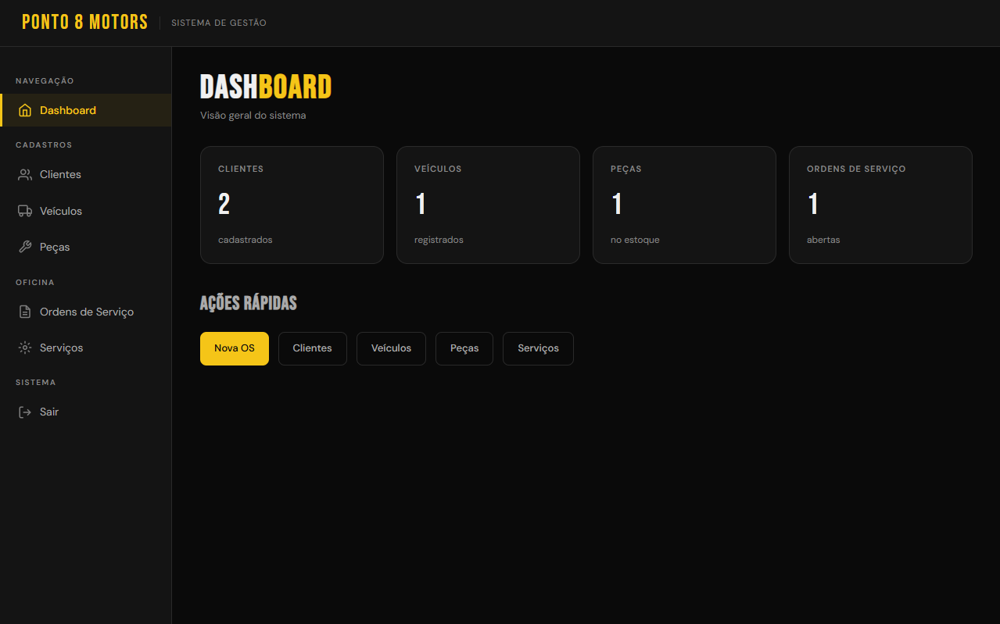
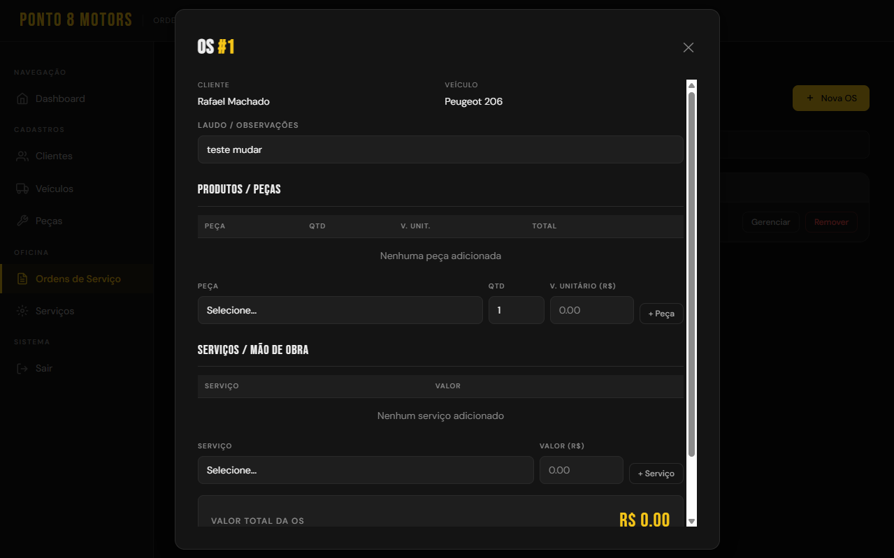
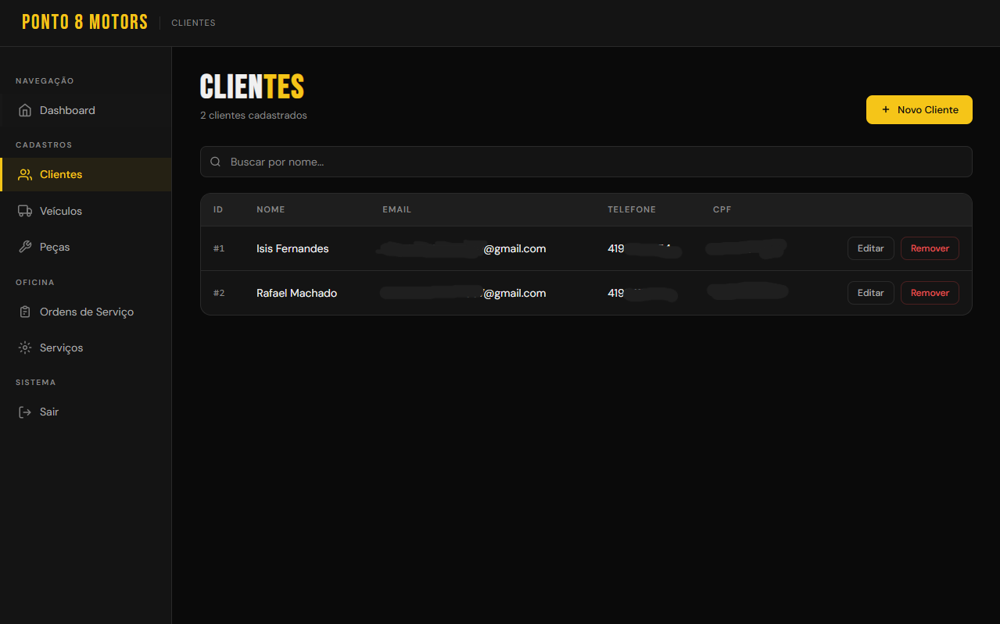
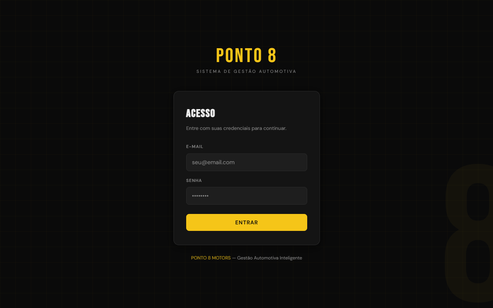
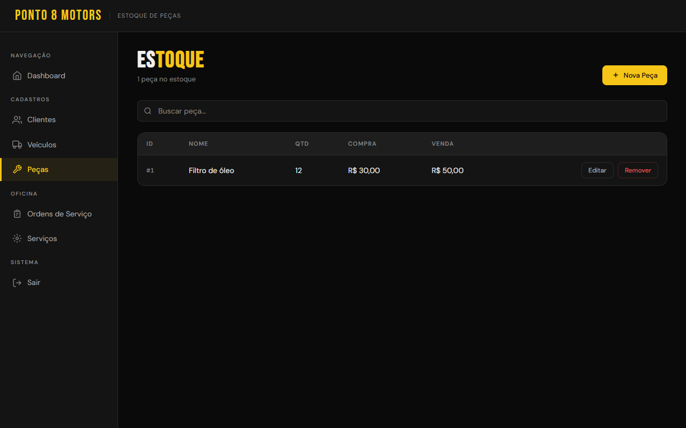
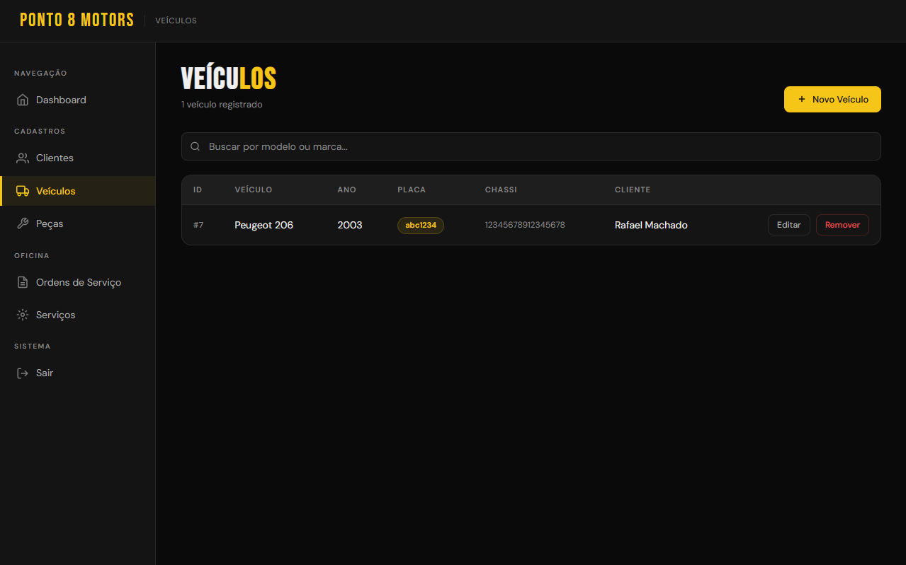

GET /projetos/ponto-8
Ponto 8 WebApp
Sistema de gestão para oficina automotiva, construída do zero, o projeto possui: autenticação de usuário, cadastros de clientes, peças e veiculos, geração de ordens de serviço em PDF e um frontend simplificado.
GET /desafio
O problema
A oficina precisava de uma forma mais organizada de gerenciar clientes, veiculos, peças e ordens de serviço, mas a solução utilizada anteriormente era cara, complexa e possuía diversas funcionalidades que não faziam parte da rotina da equipe. Na pratica, isso tornava o sistema pouco intuitivo e dificultava sua adoção pelos funcionarios.
A proposta surgiu a partir de uma necessidade simples, ter apenas o que a oficina realmente precisa. O desafio era desenvolver uma aplicação completa, mas sem excesso de funcionalidades, adaptada ao fluxo de trabalho real da equipe e capaz de acompanhar o serviço desde o cadastro do cliente e veículo até a finalização da ordem de serviço.
GET /o-que-fiz
O que eu construí
- Autenticação completa com JWT e rotação de refresh token, garantindo sessões seguras sem exigir login constante.
- Módulos de CRUD para clientes, veículos, peças e ordens de serviço, todos ligados entre si no banco de dados.
- Geração de ordens de serviço em PDF com PDFKit, prontas para impressão ou envio ao cliente.
- Criptografia de informações sensiveis tanto dos clientes, quanto dos veiculos.
GET /decisoes-tecnicas
Decisões técnicas e aprendizados
// bug — auth guard
Depurei problemas de caminho no guard de autenticação e na forma como o Express servia os arquivos estáticos do frontend, garantindo que rotas protegidas realmente barrassem acesso não autenticado.
// bug — nomes de campo
Descobri que ter divergencias nos nomes das tabelas e propriedades, causam erros no sistema, trazendo a necessidade do ORMs
// bug — exibição
Resolvi bugs de exibição de NaN em campos numéricos e problemas de estado nos modais, que faziam a interface mostrar dados desatualizados ou inconsistentes.
// documentação
Entendi a necessidade de uma boa documentação e por que cada funcionalidade no código deve ser explicada.
GET /prints
Telas do sistema





